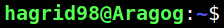
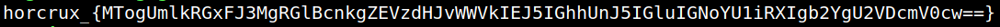
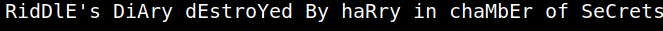

4.3 Connecting via SSH (First flag)
1. Let's try to connect via “ssh” with the credentials we got.
$ssh hagrid98@192.168.12.19
Output:

2. Show the content of the directory and the flag.
$ls
$cat horcrux1.txt
$cat horcrux1.txt
Output:

In the home directory we immediately find our first flag.
The part in the curly brackets is a base64 encoded string.
3. Let's decode it. On your Kali Machine run the following command.
$echo 'MTogUmlkRGxFJ3MgRGlBcnkgZEVzdHJvWWVkIEJ5IGhhUnJ5IGluIGNoYU1iRXIgb2YgU2VDcmV0cw==' | base64 --decode
Output:
